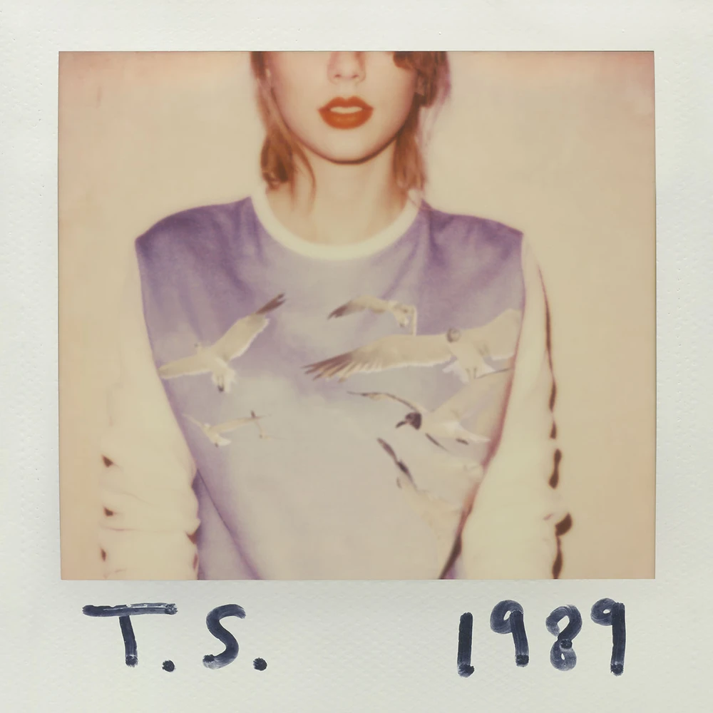
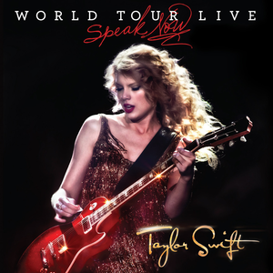
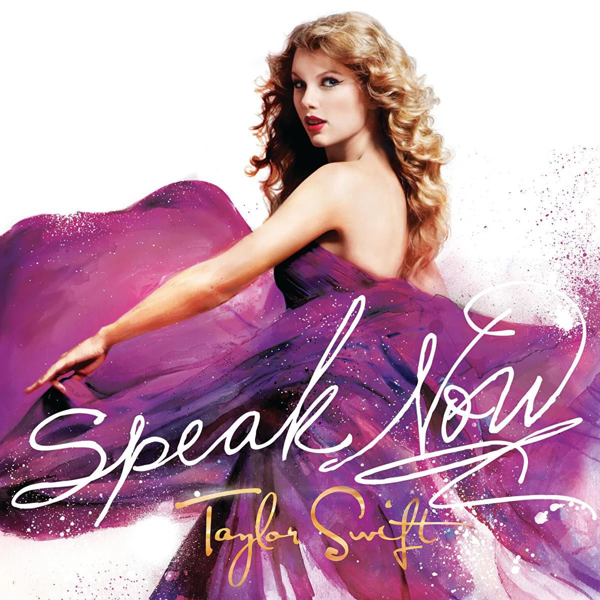
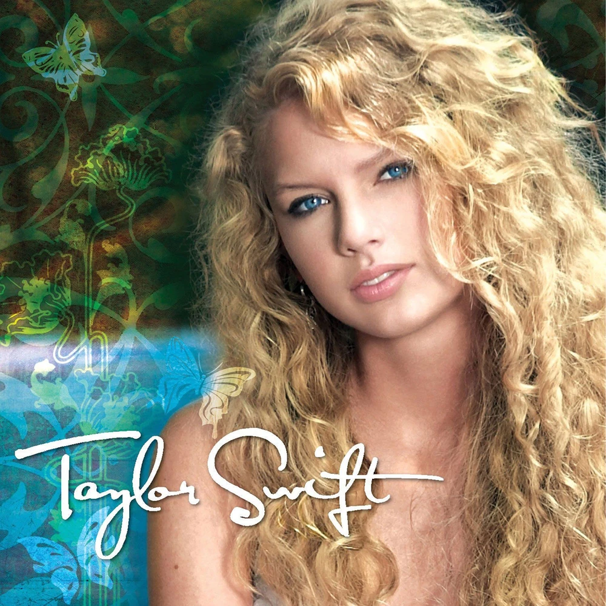

Discografía de Taylor Swift
ALBUMES ORDENADOS CRONOLOGICAMENTE
2014
1989
Con Shake it off
1989 es el título del quinto disco de estudio de Taylor Swift. Es el año de su nacimiento. "Me he tomado 2 años para hacer este 1989.
Dos años te dan suficiente tiempo para crecer y cambiar y dejar que las cosas te inspiren. He estado escuchando mucha música pop de los 80's y como éstas canciones se vivieron en una época de ilimitadas posibilidades.
Pensando en esto, este álbum es un renacimiento para mí. Este es mi primer álbum POP. Es el álbum más coherente que he hecho y es mi álbum favorito".
2012
RED
Relaciones pasadaas
Red es el cuarto álbum de Taylor Swift.
Además del título de una de las canciones. Inspirada por las muchas emociones que ha sentido en sus relaciones en los dos últimos años.
2011
SPEAK NOW WORLD TOUR LIVE
En directo
Speak now world tour live de Taylor Swift
es la muestra de la gira realizada por la cantante con el proyecto del álbum Speak now
2010
SPEAK NOW
Con Mine
Speak now (Habla ahora) es el título del tercer álbum de estudio de Taylor Swift.
Una colección de 14 canciones con Mine como primer single. La canción trata sobre la tendencia de la artista de huir del amor, y lo que es una excepción a la regla.
2008
FEARLESS
Super ventas

Fearless es el segundo álbum de Taylor Swift.
Debuta en el número 1 de la Bilboard 200, con más de medio millón de copias vendidas en su primera semana a la venta.
2006
TAYLOR SWIFT
Debut
Album debut de Taylor Swift